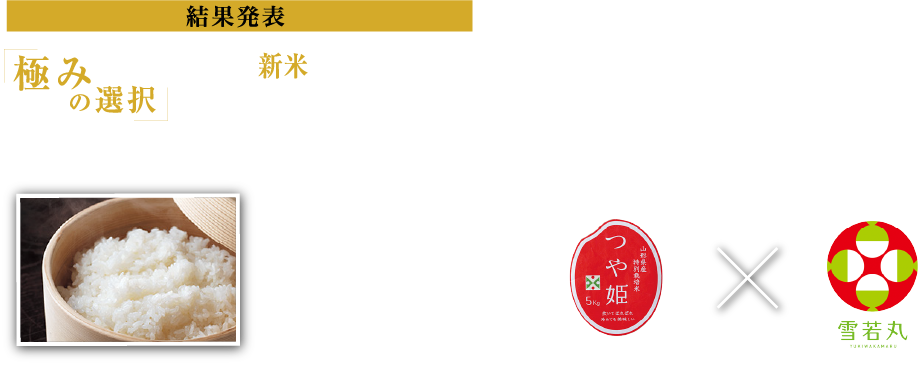
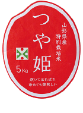
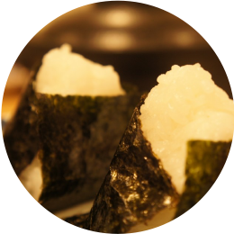
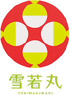
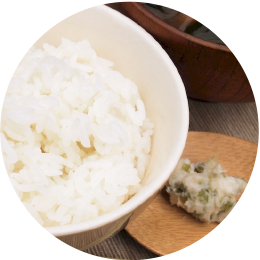

「極みの選択」新米対決は
「つや姫」に軍配が上がりました！
- つや姫
- 53%
- 雪若丸
- 47%
今回もたくさんのご応募、ありがとうございまました
プレゼント当選者の方には、
メールにてご連絡させていただきます
旨みの成分が豊富な
つやのあるお米

- 一流料亭御用達、山形のブランド米の代表格
- 日本穀物検定協会の食味官能試験でコシヒカリをしのぐ高い評価
- 艶があり粒が揃った外観に、甘みと旨みは、そのまま食べても美味しい
お米の粒がしっかりと大きく、つやつや輝いている炊きたての「つや姫」。その名にふさわしい美しさ。甘い香りにうっとりしながら口に含み、ひと粒ひと粒のもっちりとした食感を楽しみながら噛むうちに、お米が持つ本来の旨みと甘みが口いっぱいに広がります。
＼美食のスペシャリストが応援！／

｢おにぎりに最適！｣
川口由美子さん
（一社）日本母子栄養協会 代表
幼児食アドバイザー／母子栄養指導士
つや姫がおにぎりに最適な理由は、「冷めても続く旨みと甘味」なのですが、中でもこの「厳選 つや姫」はこの白銀のパッケージが表現しているように、美味しさがプラチナ級！
雪のように白く輝く
「新食感」のブランド米

- 「はえぬき」や「つや姫」に次ぐ、山形県の新しいブランド米
- 味わいは上品で、ほかの米では得られない「新食感」
- 栽培農家はまだ限られているため、希少な品
キャッチフレーズに〝つや姫の弟分〟とあるように、その稲姿は男性的で、炊いた米粒は雪のように白く輝きます。味わいは上品で、どんな惣菜にもよく合い、何より特徴的なのが、粘りがありながら噛み応えのある食感。ほかの米からは得られない〝新食感〟と注目を集めています。
＼美食のスペシャリストが応援！／

｢ベスト・オブ大粒｣
の称号を与えたい
猫田しげるさん
グルメ系編集ライター
食べてみると、「餅か！」とツッコミたくなるほどムチムチした食感です。一粒一粒に噛み応えがあり、甘みがものすごく強いです。噛むほどに糖度を感じられます。
【結果発表】
2020年11月26日
- ■ 投票の結果発表はリンベルのホームページ上で行います
- ■ 当選者にはメールでご連絡させていただきます
- ■ 当選されなかった方へのご連絡はいたしませんのでご了承ください
応募規約
本キャンペーンにご応募の際は以下の規約をお読みいただき、同意の上、ご応募ください。
■キャンペーン期間
・2020年11月5日（木）～ 2020年11月18日（水）
■プレゼントについて
・ご応募の際にご投票いただいた商品をプレゼントいたします
■ご応募にあたって
・本キャンペーンにご応募いただいた方を対象に、厳正なる抽選を行い10名の方を選出し、上記の賞品をプレゼントいたします。
・当選発表はご当選の方に、ご応募の際にご記入いただいたメールアドレスへのメールでのお知らせとさせていただきます。ご当選者以外への方へのご連絡は行いませんこと、予めご了承ください。
・当選通知メールをお受け取りになった方は、同メールでご案内させていただく「賞品お届け先指定フォーム」に必要情報をご記入の上、「返信有効期限」内にご送信ください。
「返信有効期限」内にフォームからの送信をいただけなかった場合、ご当選の権利は失効とさせていただきます。
・「賞品お届け先指定フォーム」にご入力いただいた、ご住所などお届け先情報に誤りなどがあり、賞品のお届けができない場合は、ご当選の権利は失効とさせていただきますので、併せてご注意ください。
・「賞品お届け先指定フォーム」には、ご応募の際にご記入いただいたメールアドレスをご入力いただきますが、同じメールアドレスで異なるお届け先のフォーム送信があった場合、「なりすまし賞品請求」と判断し、無条件でご当選の権利を無効とさせていただきますので、当選通知メールについては、第三者に見られないようにするなど、取り扱いには十分ご注意ください。
・当選の権利はご本人のもので、第三者に譲渡・換金はできません。
・プレゼントの発送先は日本国内に限らせていただきます。
■個人情報の取扱について
・ご入力いただきました応募者の個人情報（住所・氏名・電話番号等）は、プレゼント発送業務及びそれに係る諸連絡の為に利用させていただきます。詳細につきましては「プライバシーポリシー」をご参照ください。